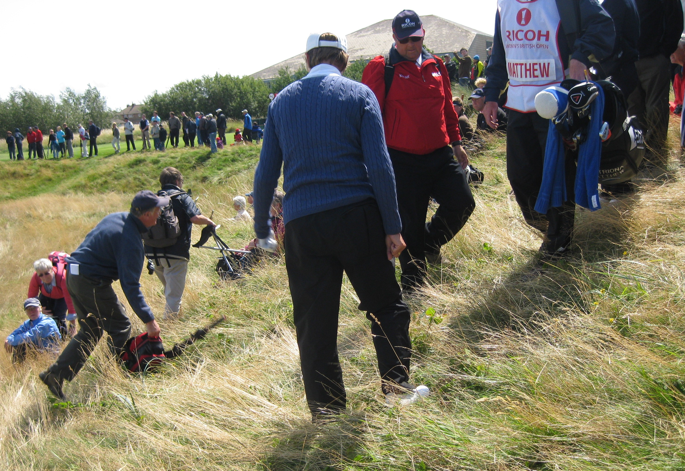

|
|
|
|
Women's British Open - Thursday July 30th -Day 1
Arrived at the course at about 9.30am. Paid a pound for my drawsheet and had a look to see who was teeing off on the 12th. It was Brittany Lincicombe playing with Jiyai Shin in the fifth group of the day. Had a chat with the crossing marshall. She said that none of the first 6 groups of the day had managed to hit the green. Weather was totally different today. No sign of rain but the wind was blowing hard and gusting a left to right crosswind.Lorena, Karen Stupples and Ai Chan also had trouble finding the green. Lorena was way short and right of the green. Her chip was distinctly ordinary leaving herself at the front of the green with a very long par putt. She raced that past the flag and missed the one coming back. Double bogey on the card again for the world number 1.
 I cut across to the 1st green just as Dinan Luna, Martina Eberl and Paula Marti approached. Only an Italian could get away with Luna's wacky headgear. The next group through was Tutta with Shiho Ohyama and Brittany Lang. Gwladys Nocera was up next playing with Karrie Webb. Her form and body language had not changed from Evian. Bogey on the first hole.
{kind=link}
Becky Brew was playing with Alfie and Janice Moodie. She got a safe par to start the week. Then the crowd thickened a little as it was the Gulbis/Wie/Ueda group. As I had promised Terry Mac I would follow him if he had a bag this week I set off with the large gallery down the second fairway and stayed with them until they teed off on the 4th.
Cut across to see Brew tee off on the 14th and then, after enjoying a bacon roll, took up my station on the mound overlooking the 6th fairway/green and 3rd green. Watched Creamer, Nordqvist and Beany putt out on the 3rd. Chie Arimura laid up with her 2nd shot on 6 but only succeeded in putting it into one of the really deep fairway bunkers. It took her three goes to get out and when she did she chunked her next shot into the really deep left greenside bunker. She got out of that one OK but two putted so that was a nine on her card. Saw later that that was nothing. Inky made an 11 on the same hole.
Beany's 2nd shot on 6 had the walking marshall say "that had better draw". It didn't and was headed straight for us. It hit some guy sat on the mound and ended up in the hay on the downslope. Catriona was very apologetic as was Graham. Her lie was horrid and all she could do was chunk it down into one of the greenside bunkers. She didn't get up and down so it was a bogey.
Moved over to the 11th green to see Tutta's group go through. Tutta was at level par but disappointed to not make a birdie on the par five 11th. Becky Brew had obviously had trouble off the tee and was quite some way back with her second. She seemed to be going for the green but scuffed it and came up quite a bit short. She didn't seem very happy. Things improved significantly with her fourth shot as her pitch went straight into the hole, slam dunk. High fives and smiles all round. Great way to make birdie. As I was close to the car park, and the weather was moving in I called it a day at that point.